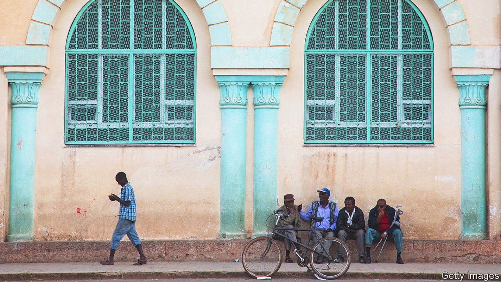
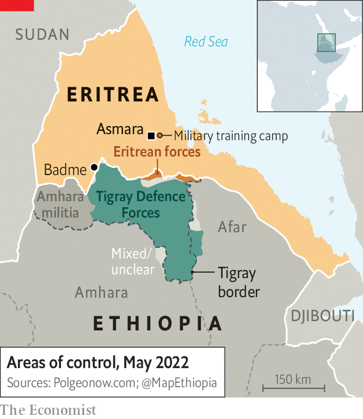

Shops are bare, youngsters hide to avoid conscription

In the corner of a quiet bar in Asmara, Eritrea’s capital, Mulugeta (not his real name) hatches a plan to escape. He has made contact with the people-smugglers who say they will arrange the crossing to Sudan. His older siblings in America have paid the fee. From Sudan, he will travel to Libya—and then to Europe. But his voice is hushed: in Eritrea a young man needs permission from the army to move freely. Mulugeta fears being conscripted and sent to fight in Ethiopia. He does not want to die in another country’s civil war.
Four years ago, young Eritreans caught a glimpse of a more hopeful future. Abiy Ahmed, Ethiopia’s new prime minister, came to Asmara and embraced Issaias Afwerki, Eritrea’s dictator. The two signed a peace deal ending one of Africa’s longest-running conflicts, a bloody border war that had cost some 80,000 lives. It was fought most intensely about two decades ago for control of a few barren hillsides along the border with Ethiopia’s Tigray region.
By late 2020 Eritrea was back at war. This time, however, it is as an ally of the Ethiopian government in its ferocious campaign against the Tigrayan People’s Liberation Front (tplf), the party-cum-militia which runs Tigray. Once again Eritrean conscripts were ordered into Tigray, where they murdered, raped and ransacked towns on such a scale that Asmara’s streets nowadays thrum to the sound of stolen Ethiopian lorries.

Abiy, who at first denied that Eritrean troops were in Ethiopia, in March 2021 at last promised to have them withdrawn. Yet for more than a year his words proved hollow. Even after the Ethiopian army was routed from most of Tigray in June last year, large numbers of Eritrean troops remained. Last year they helped enforce a blockade of most food shipments to Tigray, which has pushed almost 1m people to the brink of starvation. Now change is afoot. In March Ethiopia agreed to a fragile truce with the tplf, raising hopes of an enduring peace in Tigray. More recently, Eritrean troops have pulled back towards the border (see map).
The course of Ethiopia’s civil war now depends to a great extent on when, and how, Eritrean troops leave Ethiopia. Issaias has nursed a grudge against the tplf since he fought alongside it to topple Ethiopia’s Marxist military dictatorship, which they did in 1991. Two years later Eritrea seceded from Ethiopia’s federation. Yet because Issaias has long believed that the tplf is bent on invading Eritrea and overthrowing him—a charge his government recently repeated—he is unlikely to withdraw his troops voluntarily without having first smashed the tplf.
Nor is he likely to negotiate. “We have consistently offered to engage Eritrea on how to de-escalate,” says a Western official involved in mediation between Abiy and the tplf. “They have not demonstrated a willingness to.” Some diplomats now worry that the tplf might indeed risk attacking northwards to Asmara if Issaias continues to refuse to join talks.
Behind all this the question arises: how much more can Issaias’s long-suffering citizens endure? To answer this a reporter for The Economist recently travelled to Eritrea, which normally bars foreign journalists. Most people interviewed were sceptical about winning the conflict against the tplf and blamed Issaias for dragging Eritrea into it. “We are tired of war,” says a priest. “Our children are dying for something that has no benefit for us.”
Cafés and bars once packed with young people are mostly empty. At the central market in Asmara piles of fruit are rotting in the stalls, while shelves in the shops are almost bare, save for what can be smuggled in from Sudan. With the outbreak of war the flow of contraband from Ethiopia abruptly stopped. Chemists are running low on medicine as basic as painkillers.
Even before the war, Eritrea’s system of indefinite national conscription had turned it into one of the world’s fastest-emptying countries. Few youngsters now leave their homes after dark for fear of being press-ganged. Military round-ups seem to be intensifying: a new training camp near Asmara opened in March. Every month hundreds of people flee across the border to Sudan. “Eritrea is like a giant prison,” says Mulugeta. Emigration drains the pool of potential conscripts, but it also makes resistance to Issaias’s rule—and his war—less likely.
Another question concerns the relationship between Abiy and Issaias. “Abiy wants the war to end, so Issaias is unhappy,” says an Eritrean working at a foreign embassy in Asmara. In January, the day after Abiy released some tplf leaders from prison, Issaias gave an interview in which he, in effect, claimed the right to intervene in Ethiopia to eliminate the tplf’s “troublemaking”. Since then, Abiy has made several visits to Asmara, perhaps to persuade Issaias not to undermine the truce. “So long as Issaias continues to meddle in Ethiopia’s domestic affairs, peace is unlikely,” warns an Ethiopian diplomat.
One Eritrean aim may be to block Tigrayan forces from reaching the border with Sudan, which they could use to bring in supplies. “If the tplf gets access, that means Eritrea’s security will be compromised,” says a soldier in Asmara. This also rattles officials in Amhara, a region to the south of Tigray, whose forces are battling to control territory along Sudan’s border that they seized at the start of the war. Amhara’s commanders have drawn close to their counterparts in Eritrea, who have hosted and trained thousands of Amhara militiamen. In the past week Abiy’s government has arrested thousands of critics and militia leaders in Amhara, perhaps to reduce the risk of that region becoming a threat to the federal government.
Hopes for peace are still alive. Tigrayan and Ethiopian commanders are in regular touch. Hundreds of aid lorries are being let into Tigray, though not yet enough of them. This week the tplf freed thousands of prisoners of war. Yet both sides are also preparing for another round of fighting. On May 2nd the tplf said it expected a new offensive from Eritrea. A week later Ethiopian officials accused the tplf of attacking Eritrean forces at Rama and Badme, the very site of the battle that sparked the border war in 1998. A single misstep could yet again lead to calamity. ■